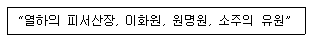
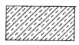
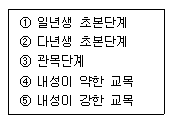
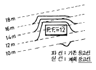
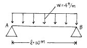
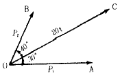
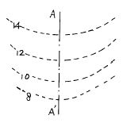
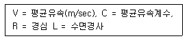
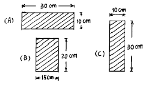
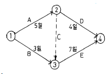

조경기사 (2003-05-25 기출문제)
1과목: 조경사
1. 서구(西歐)와 가장 관련이 적은 것은?
- 성곽 정원의 발달
- 로마네스크 양식의 교회건축
- 봉건 장원제도
- 비대칭 균형
(정답률: 67%)

2. 미국의 조경발달에 획기적인 영향을 끼친 시카고박람회의 영향이 가장 적은 것은?
- 도시미화운동
- 도시계획의 발달
- 조경계획의 타 전문분야와 공동작업
- 신도시계획
(정답률: 89%)
3. 영국과 프랑스에 비해 이태리(Italy) 르네상스 시대의 정원양식이 널리 전파, 응용될 수 없었던 가장 중요한 이유는?
- 장식성(裝飾性)
- 식물(植物)
- 지형(地形)
- 실용성(室用性)
(정답률: 91%)
4. 다음 중에서 국명과 조경양식이 일치하지 않는 것은?
- 에스파니아 - 무어양식(Moorish style)
- 인도 - 무갈양식(Mughals style)
- 프랑스 - 바로크식 별장 저택의 자연풍경 양식
- 독일 - 구성식
(정답률: 38%)
5. 조선시대의 조경식물을 연구하는데 중요한 문헌들이다. 여기에서 강희안이 지은 양화소록(養花小錄)은 다음의 어느 책에서 찾을 수 있는가?
- 산림경제(山林經濟)
- 임원십육지(林園十六誌)
- 지봉유설(芝峰類說)
- 진산세고(晋山世稿)
(정답률: 50%)
6. 한자로 된 식물명이 한글로 잘못 적어진 것은?
- 槐 : 회화나무
- 紫薇 : 장미화
- 檜 : 향나무
- 山茶 : 동백
(정답률: 16%)
7. 테베에 있는 아메노피스 3세의 분묘의 벽화에서 보여준 이집트 정원의 구성요소가 아닌 것은?
- 높은 울타리와 탑문
- 포도나무 시렁
- 침상지(sunken pond)
- 동굴원(grotto garden)
(정답률: 79%)
8. 일본의 모모야마(桃山)시대에 발달한 다정의 시설물이 오늘날 일본정원의 점경물로 널리 쓰이는 것은?
- 석등과 세심석
- 수수분과 석등
- 삼존석과 석탑
- 음양석과 석등
(정답률: 75%)
9. 고려시대 풍수설의 영향을 직접 받지 않은 정원공간은?
- 만월대 궁원
- 장원정
- 만춘정
- 최충헌의 남산리 별서
(정답률: 47%)
10. 다음 중 축산고산수 수법으로 축조된 대표적 정원은?
- 대선원서원
- 삼보원
- 용안사석정
- 천용사
(정답률: 50%)
11. 송시대(宋時代)의 유학자인 주렴계(주돈이)가 주창한 애련설(愛蓮說)과 관련이 없는 명칭은?
- 경복궁 후원에 있는 향원정(香遠亭)과 취향교(醉香橋)
- 전라남도 화순군에 있는 임대정(臨對亭)
- 경상북도 안동군에 있는 도산서당의 정우당(淨友塘)
- 강원도 강릉에 있는 선교장의 활래정(活來亭)
(정답률: 60%)
12. 다음 정원의 조성년대와 경영자가 맞지 않은 것은?
- 소쇄원, 양산보, 1520-1557년
- 석문임천정원(서석지), 정영방, 1610-1636년
- 문수원선원, 이자현, 1090-1110년
- 부용동정원, 윤선도, 1301-1327년
(정답률: 57%)
13. 경복궁에 현존하고 있는 건물이 아닌 것은?
- 만춘전(萬春殿)
- 사정전(思政殿)
- 함화당(咸和堂)
- 강령전(康寧殿)
(정답률: 54%)
14. 다음은 어느 시대에 이루어진 작품인가?

- 진
- 당
- 명
- 청
(정답률: 60%)
15. 중국 명대(明代) 말에 저술된 원야(園冶)에 대한 설명 중 가장 거리가 먼 사항은?
- 원야의 저자는 문진향(文震享)이다.
- 원야의 원(園)은 원림(園林)을 가리키고, 야(冶)는 설계조성의 의미를 갖고 있다.
- 원림의 조성에는 설계자의 역할이 전체 원림조성에 70% 정도 중요하다고 흥조론(興造論)에 설명되어 있다.
- 원림의 조성에는 사람, 지역과 환경, 공인 등의 조건이 다르기 때문에 일정한 법이 성립되기 어렵다고 적혀있다.
(정답률: 86%)
16. 경복궁의 원유에 대한 설명이다. 잘못된 것은?
- 경회루와 방지는 조선시대 왕궁의 원지 가운데 가장 장엄한 규모로서 외국사신의 영접잔치나 궁중의 연회 장소로 사용되었다.
- 향원지의 명칭은 연의 별칭으로 주렴계의 애련설의 구절인 향원익청에서 따온 것이다.
- 자경전 후원에 있는 굴뚝의 벽면에 해, 산, 구름, 바위, 소나무, 거북, 사슴, 학, 불로초 등 십장생과 바다, 포도, 연꽃, 대나무가 장식되어 있다.
- 교태전 후원의 아미산에는 사괴석으로 된 4단의 화계가 있으며 화계의 정상부에는 정자가 배치되어 있다.
(정답률: 80%)
17. 다음은 1900년 이후 일제강점기에 조성된 공원이다. 옳지 않은 것은?
- 탑골공원
- 장충단공원
- 사직공원
- 효창공원
(정답률: 63%)
18. Birkenhead Park에 관련된 내용이 아닌 것은?
- James Pennethorne가 설계
- 공원 경계부에 별장터를 만들어 공원건설의 재정지원
- F.L.Omlsted의 공원개념에 큰 영향
- 도시공원설립의 계기
(정답률: 70%)
19. 장방형 격자모양의 도시를 계획하게 한 고대 그리스 사람은 누구인가?
- 하무라비
- 디메트리우스
- 히포다모스
- 피타고라스
(정답률: 91%)
20. 20C Muthesius(독)가 건물과 정원의 관계를 주장하였는데 맞는 것은?
- 정원과 건물의 이질성을 강조하였다.
- 건물과 정원은 서로 조화를 이루어야 한다.
- 건물과 정원은 각각 독립적 기능을 지녀야 한다.
- 정원은 건축 구조적 기능을 공간에 충분히 나타내어야 한다.
(정답률: 85%)
2과목: 조경계획
21. 조경계획에서 환경심리학적 접근방법에 속하지 않는 것은?
- 공원 이용자의 수를 추정하여 이를 설계에 반영하는 연구
- 공원에 있어서 이용자의 프라이버시에 관한 연구
- 도시경관의 환경 이미지를 찾는 연구
- 주민의 사회문화적 특성을 계획에 반영하는 연구
(정답률: 40%)
22. 도로를 기능별로 구분할 때 가구를 획정하고 택지와의 접근을 목적으로 하는 도로는?
- 집산도로
- 국지도로
- 주간선도로
- 보행자전용도로
(정답률: 47%)
23. 엔트로피(entropy)를 가장 적절하게 설명하고 있는 항목은?
- 에너지의 생성 요인
- 에너지 전이 과정에서 손실되는 에너지
- 일정 에너지와 태양 에너지의 파장의 비례
- 에너지의 이용 효율
(정답률: 65%)
24. 칼데삭(cul - de - sac)형 가구의 특징으로서 적당치 않은 것은?
- 보차도 분리에 의하여 보행자 전용 도로를 설치할 수 있다.
- 통과 교통을 금지하여 거주성과 프라이버시가 좋다.
- 쓰레기 처리 등 써비스 동선이 좋다.
- 가로의 끝에는 차량이 회전할 수 있는 시설이 필요 하다.
(정답률: 65%)
25. 아파트 단지내 조경설계의 주요 고려사항 중 일조,통풍, 차광,조망권 확보 등에 가장 밀접한 관계를 지니는 것은?
- 건축바닥 면적과 형태
- 아파트 지구내 동선의 폭
- 아파트 총 거주자수
- 아파트의 인동 간격
(정답률: 69%)
26. 세계 최초 및 한국 최초로 지정된 국립공원은?
- 옐로우스톤(yellow stone) - 지리산
- 요세미티(yosemite) - 지리산
- 옐로우스톤(yellow stone) - 설악산
- 요세미티(yosemite) - 설악산
(정답률: 79%)
27. 시각적 선호에 관한 계량적 모델이 Y = 3.3 + A + 0.3B + 0.1C + 0.8D와 같을 때 시각적 선호에 가장 큰 영향을 주는 변수는? (단, Y = 시각적 선호 값, A = 근경 식생구역의 경계선 길이, B = 중경 비식생구역의 경계선 길이, C = 중경 식생구역의 경계선 길이, D = 원경 식생구역의 경계선 길이)
- A
- B
- C
- D
(정답률: 80%)
28. 근린공원의 설명 중 틀리는 것은?
- Perry가 근린주구의 개념 설정에 따라 형성된 공원이다.
- 우리나라의 도시공원법에서는 800m를 근린공원의 이용권으로 삼고 있다.
- 현대에 와서는 주민들이 일상 생활에서 행하는 여러 활동들이 중첩되어 형성되는 생활권에서 주로 이용 되는 공원으로 해석하는 것이 옳다.
- 당해 도시공원의 기능을 발휘할 수 있는 다양한 시설을 설치하기에 적합한 수준의 지형에 입지하는 것이 좋다.
(정답률: 45%)
29. 조경분야와 건축분야가 가장 밀접하게 협력해야 할 공통 관심 분야인 것은?
- 실내 장식
- 건물 주변공간(exterior space)의 설계
- 모든 옥외공간(outdoor space)의 설계
- 국립공원 등 자연공간의 설계
(정답률: 73%)
30. 우리나라 주택건설촉진법에 의한 아파트 단지내 도로의 폭 기준에 맞지 않는 것은?
- 1,000 세대 이상 : 15m 이상
- 500 - 1,000세대 미만 : 12m 이상
- 300 - 500세대 미만 : 10m 이상
- 100 - 300세대 미만 : 6m 이상
(정답률: 59%)
31. 가령 경부고속도로와 중앙고속도로가 서로 교차하는 지점에 인터체인지를 설치하려 한다면 다음의 어떤 형식이 가장 바람직한가?
- 클로버형
- 트럼펫형
- 다이아몬드형
- 직결Y형
(정답률: 65%)
32. 도시공원계획과 관련한 우리나라의 법체제에 관한 기술로서 잘못된 것은?
- 도시공원과 녹지는 기본적으로 도시공원법과 국토의 계획및이용에관한법률의 적용을 받는다.
- 공원과 녹지의 조성계획의 입안 변경은 국토의계획 및 이용에관한법률로 결정된다.
- 공원과 녹지의 설치, 개량, 변경은 도시공원법을 따른다.
- 공원과 녹지의 유형, 구조, 설치기준은 도시공원법을 따른다.
(정답률: 53%)
33. 자연공원법상 공원계획을 결정하거나 변경함에 있어자연환경에 미치는 영향을 평가할 사항에 해당되지 않는 것은?
- 환경현황분석, 자연생태계 변화분석
- 대기 및 수질 변화분석, 폐기물 배출분석
- 환경에의 악영향 감소방안
- 토지이용현황분석
(정답률: 46%)
34. 다음 인문생태적 조경이론(Human Ecological Planning)을 설명한 것 중 틀리는 것은?
- 미국의 조경가 맥하그(Ian.McHarg)에 의해 주도 되었다.
- 인문주의적 조경이론이다.
- 모든 이용자들을 위해 가장 적합한 환경을 추구하고자 한다.
- 물리, 생물, 문화적 시스템을 서로 연관지어 설명 하고자 한다.
(정답률: 43%)
35. 도시공원법상 도시공원안에 설치할 수 있는 공원시설의 부지면적은 당해 도시공원의 면적에 대한 비율로 규정 하고 있다. 틀린 것은?
- 어린이공원: 60퍼센트이하
- 근린공원: 30퍼센트이하
- 묘지공원:20퍼센트이상
- 체육공원: 50퍼센트이하
(정답률: 56%)
36. 계획시 반영되는 표준치(standard)의 설명 중 옳지 못한 것은?
- 계획이나 의사결정과정에서 지침 또는 기준이 된다.
- 목표의 달성정도를 평가하는데 도움이 된다.
- 여가시설의 효과도(Effectiveness)를 판단하는데 도움이 된다.
- 방법론적으로 우수하며, 확실성이 있다.
(정답률: 53%)
37. 조경계획의 과정에서 기초자료의 분석은 주로 자연환경과 인문사회환경의 분석으로 대별할 수 있다. 다음 사항 중 인문사회환경의 분석요소가 아닌 것은?
- 인구
- 교통
- 식생
- 토지이용
(정답률: 55%)
38. 인간행태 관찰방법 중 시간차 촬영(Time-Lapse Camera)에 이용될 수 있는 가장 적절한 조사 내용은?
- 광장 이용자의 하루 중 보행통로 및 머무는 장소 조사
- 국립공원의 보행패턴및 이용장소 조사
- 대규모 아파트단지의 자동차 통행패턴 조사
- 국민학교 아동이 집에서부터 학교에 도달하는 보행통로 조사
(정답률: 58%)
39. 적지분석의 일반적인 과정에 포함되지 않는 것은?
- 가치와 자연요소의 관련성분석
- 바람직한 자연요소의 추출, 도면화
- 인간의 요구와 자연요소간의 관련성분석
- 제한성과 자연요소의 관련성분석
(정답률: 24%)
40. 공간의 수요량 추정에 사용되는 다음의 용어 설명 중 잘못된 것은?
- 4계절형에서의 최대일률은 2계절형보다 높다.
- 회전율이란 1일 중 가장 이용자가 많은 시간의 이용자수와 그날의 총이용자수에 대한 비율이다.
- 이용자의 체류시간이 증가하면 회전율은 증가한다.
- 최대일 이용자수의 60 - 80% 정도를 서비스율로 설정하는 것은 경영의 효율을 위함이다.
(정답률: 39%)
3과목: 조경설계
41. 버블다이어그램(Bubble diagram)에 대한 다음 설명 중 가장 적합하지 않은 것은?
- 3차원적 입체구상을 빠르게 검토할 때 주로 이용 된다.
- 설계과정 초기의 기본구상 단계시 통상 이용된다.
- 설계대상 부지의 규모나 형상이 크게 고려되지 않는다.
- 설계가의 생각을 고도로 요약하고 상징적으로 표현할 수 있는 수단이 된다.
(정답률: 31%)
42. 다음 게쉬탈트 이론 중 그림(figure)으로서의 통합 요인에 해당되지 않는 것은 어느 것인가?
- 근접의 요인
- 유사 요인
- 포위의 요인
- 페쇄의 요인
(정답률: 50%)
43. 도면을 확대 축소하는 방법 중 배율을 정한 방안격자를 이용해서 변화점의 위치를 옮기고 선분을 완성하는 방법은?
- 극확대축소법
- 좌표확대축소법
- 투시확대축소법
- 평행확대축소법
(정답률: 71%)
44. 디자인의 가장 보편적인 원리로서 하나의 조화있는 패턴 또는 다양한 요소들 사이에 확립된 질서 혹은 규칙을 무엇이라고 하는가?
- 다양성(Variety)
- 통일성(Unity)
- 강조(Emphasis)
- 비례(Proportion)
(정답률: 79%)
45. 다음 그림은 어떤 재료를 나타낸 것인가?

- 인조석
- 철재
- 목재
- 석재
(정답률: 67%)
46. 콘크리트 포장도로는 신축줄눈을 만들어 준다. 신축줄눈 설치에 대한 설명이 잘못된 것은?
- 콘크리트가 팽창 수축될 때 슬래브(slab)의 파손을 막기 위해 설치한다.
- 신축줄눈의 설치 간격은 6∼10m마다 설치한다.
- 신축줄눈의 나비는 1∼5mm정도로 한다.
- 신축줄눈재는 나무판재, 역청합성수지 등을 사용한다.
(정답률: 29%)
47. 시각적 선호를 결정짓는 물리적 변수에 해당하지 않는 것은?
- 형태
- 색채
- 질감
- 복잡성
(정답률: 54%)
48. 시설물 설계시 직경 1cm의 이형철근을 사용했다면 도면에 표시하는 방법이 옳은 것은?
- ø 10 이형철근
- D1 이형철근
- 이형철근 ø 1
- 이형철근 D10
(정답률: 63%)
49. 건설공사의 시행에 필요한 재료, 공법, 기술적 세부사항 등 공종에 대한 시공기준을 정부에서 제시한 시방서는?
- 일반시방서
- 특별시방서
- 정부시방서
- 표준시방서
(정답률: 69%)
50. 외부공간에 실제의 인물과 비슷한 크기로 보이도록 인물 조각상을 세우려면 실제 인물 크기의 몇 배로 하는 것이 이상적인가?
- 1배
- 1.5배
- 2.5배
- 4배
(정답률: 56%)
51. 시각적 흡수능력(visual absorption)을 설명한 것 중 옳지 못한 것은?
- 혼효림은 단순림보다 시각적 흡수능력이 높다.
- 지형적으로 위요된 장소는 개방된 장소보다 시각적 흡수능력이 높다.
- 시각적 흡수능력이 높은 곳은 개발의 적지가 되지 못한다.
- 수목에 의하여 가려진 장소는 시각적 흡수능력이 높다.
(정답률: 42%)
52. 조경설계에서 수경요소(waterscape)의 기능이 아닌 것은?
- 공기 냉각기능
- 동선의 연결기능
- 소음 완충기능
- 레크레이션의 수단으로서의 기능
(정답률: 50%)
53. 경관의 우세원칙과 거리가 먼 항은?
- 대비(contrast)
- 축(axis)
- 시간(time)
- 집중(convergence)
(정답률: 57%)
54. 공원내 보행자 도로를 설계하려 한다. 설계 기준에 부적합 요소는 어느 것인가?
- 원활한 배수처리를 위하여 10% 정도의 경사를 준다 .
- 표면처리는 부드러운 재료를 사용하는 것이 좋다.
- 배수 구조물은 연석에 접한 곳에 설치한다.
- 연석은 단차를 두어 경계를 분명히 하는 것이 좋다.
(정답률: 85%)
55. 조경설계기준에 의한 그네의 설계 기준으로 가장 옳은 것은?
- 2인용을 기준으로 높이 3.0 - 3.5m를 표준 규격으로 한다.
- 2인용을 기준으로 폭 4.5 - 5.0m를 표준규격으로 한다.
- 그네는 남향이나 서향으로 한다.
- 집단적으로 놀이가 활발한 자리 또는 통행량이 많은 곳에 설치한다.
(정답률: 54%)
56. 조경설계에 많이 사용되는 소프트웨어가 아닌 것은?
- Auto-CAD
- LANDCADD
- SYMAP
- D-Base
(정답률: 59%)
57. 야영장의 입지조건을 설명한 것 중 잘못된 것은?
- 평탄지보다 완경사면이 좋다.
- 하부식생이 있는 수림지가 좋다.
- 숲에서는 나무의 높이가 높은 곳이 좋다.
- 재해 발생이 우려되는 곳은 피해야 한다.
(정답률: 56%)
58. 색채와 빛의 성질 중에서 옳지 않은 것은?
- 빨강색 빛은 프리즘에 의하여 가장 작게 굴절한다.
- 어떤 표면에 여러 종류의 색소를 칠할수록 어두어 진다.
- 어떤 표면에 여러 종류의 빛을 비출수록 표면은 밝아진다.
- 흰색표면은 그 위에 비치는 빛을 거의 모두 흡수하기 때문에 명도가 높다.
(정답률: 55%)
59. 구심적 경관(focal landscape)에서 경관훼손에 가장 예민한 장소는?
- 바닥면
- 좌우의 수직면
- 바닥면과 수직면의 경계선
- 초점을 이루는 중심부분
(정답률: 56%)
60. 독립벽체나 펜스의 환경 조성상의 기능이 아닌 것은?
- 상이한 기능의 통합
- 공간의 한정
- 시선의 차폐
- 시각적 요소로서의 기능
(정답률: 60%)
4과목: 조경식재
61. 천이가 진행되는 장소의 식물상 교체모델 순서가 맞게 된 것은?

- ①→ ②→ ③→ ④→ ⑤
- ①→ ③→ ④→ ②→ ⑤
- ①→ ③→ ②→ ④→ ⑤
- ⑤→ ④→ ③→ ②→ ①
(정답률: 74%)
62. 다음 중 고속 도로변 식재유형 중 사고방지를 위한 식재가 아닌 것은?
- 차광식재
- 명암순응식재
- 시선유도식재
- 완충식재
(정답률: 37%)
63. 이웃에 낡은 창고 등이 인접해 있을 때 식재를 통해 이룰수 있는 효과는?
- 섬광조절
- 공간 만들기
- 차폐
- 시선유도
(정답률: 67%)
64. 군식(群植)에 대한 설명으로서 가장 옳지 않은 것은?
- 자연스러운 경관을 형성할 수 있다.
- 설계에 통일성을 줄 수 있다.
- 대부분의 식물은 군락 상태하에서 더 잘 자랄 수 있다.
- 자체 경쟁으로 군락의 전반적인 생장을 저해한다.
(정답률: 62%)
65. 우리나라 중부지방의 건성천이에서 최종적으로 이루어지는 극성상은 어느 수종인가?
- 소나무, 단풍나무류
- 산벚나무, 물푸레나무
- 진달래, 철쭉
- 참나무류, 서어나무
(정답률: 85%)
66. 방화용수로 적합한 것은?
- Viburnum awabuki
- Pinus densiflora
- Albizzia julibrissin
- Sambucus williamsii var. coreanna
(정답률: 48%)
67. 다음 중 자연풍경식 식재유형이 아닌 것은?
- 부등변 삼각형 식재
- 모아심기
- 대칭식재
- 배경식재
(정답률: 69%)
68. 근원직경이 30 cm 되는 수목의 뿌리분을 뜨고자 한다. 근원간주(根元幹周)로 부터 뿌리분 가장자리까지의 간격을 얼마로 하는 것이 좋은가? (단, 일반적인 방법에 의하므로 상수 4를 적용할것)
- 41 cm
- 51 cm
- 61 cm
- 71 cm
(정답률: 54%)
69. 복엽으로서 생장이 빨라 공원의 속성 조경에 가장 적당한 수종은?
- Acer negundo L.
- Acer ginnala MAX.
- Acer saccharinum L.
- Acer palmatum THUNB.
(정답률: 48%)
70. 경관생태계의 기능적 특징과 가장 거리가 먼 것은?
- 공간의 배열
- 에너지의 흐름
- 생물종의 이동
- 물질의 순환
(정답률: 46%)
71. 다음 중 붉은 단풍이 드는 나무는?
- 백합나무
- 화살나무
- 느릅나무
- 칠엽수
(정답률: 71%)
72. 강한 색채를 가지고 있어 배경식재와 대비를 이루어 경관의 중심을 제공하는데 사용 되어질 수 있는 수종은?
- 리기다소나무
- 잣나무
- 해송
- 홍단풍
(정답률: 61%)
73. 식재지의 토질로서 가장 이상적인 것은?
- 떼알구조로서 토양입자 70%, 수분 15%, 공기 15%
- 떼알구조로서 토양입자 50%, 수분 25%, 공기 25%
- 홑알구조로서 토양입자 70%, 수분 15%, 공기 15%
- 홑알구조로서 토양입자 50%, 수분 25%, 공기 25%
(정답률: 72%)
74. 한곳에서 잎이 3개씩 모여 나고 겨울눈에 송진이 많이 덮히고 줄기에서 움가지가 흔히 돋아나는 것은?
- 스트로브소나무
- 리기다소나무
- 잣나무
- 방크스소나무
(정답률: 54%)
75. 배식 설계 과정에서 수목을 선택할 때 환경과의 관계에서 고려되어야 할 사항은?
- 광선요구도
- 수형과 크기
- 색깔(colour)
- 질감(texture)
(정답률: 60%)
76. 다음 설명 중 옳지 않은 것은?
- 생태천이에서 성숙단계에 도달할수록 군집의 안정성이 낮아진다.
- 생태천이에서 성숙단계에 도달할수록 전체 유기물의 양이 많아진다.
- 생태천이에서 성숙단계에 도달할수록 공간적 이질성에 대한 조직화가 충분히 이루어진다.
- 생태천이에서 성숙단계에 도달할수록 생태적 지위의 특수화가 좁아진다.
(정답률: 67%)
77. 우리나라 중부지방에서 생태식재를 하고자 할 경우 대기오염과 산성우에 비교적 강한 수종으로 짝지워진 것은?
- 자귀나무, 자작나무
- 녹나무, 화살나무
- 산벚나무, 단풍나무
- 때죽나무, 가시나무
(정답률: 73%)
78. 식재계획도(planting plan)가 구비해야 할 사항으로서 적합치 않은 것은?
- 발주자가 쉽게 이해할 수 있어야 한다.
- 상세한 식재계획을 작성할 수 있을 정도로 정확해야 한다.
- 현장감독을 위한 실시도면으로서 적합치 않아도 된다.
- 유지관리 계획에 적합해야 한다.
(정답률: 77%)
79. 계절적인 변화를 보이는 배식을 하고자 한다. 다음 중 봄철 부터 꽃나무의 개화순서가 옳게 된 것은?
- 고광나무 → 매화나무 → 무궁화 → 팔손이나무
- 매화나무 → 무궁화 → 고광나무 → 팔손이나무
- 매화나무 → 고광나무 → 무궁화 → 팔손이나무
- 팔손이나무 → 무궁화 → 고광나무 → 매화나무
(정답률: 56%)
80. 나무 잎이 먼저 피고 다음에 꽃이 피는 것은?
- 매실나무
- 왕벚나무
- 산수유나무
- 산딸나무
(정답률: 65%)
5과목: 조경시공구조학
81. 조경공사에 필요한 재료비 계상에 대한 설명 중 가장 적합한 항목은 어느 것인가?
- 식재공사에 필요한 지주목은 간접재료비에 해당된다.
- 목공사에 필요한 접착제는 직접재료비에 해당된다.
- 재료 구입과정에서 발생되는 운임,보험료,보관비는 별도 계상한다.
- 작업 중 발생하는 부산물은 강재 할증분만 재료비에서 공제한다.
(정답률: 34%)
82. 도면의 그림은 정지계획도이다. 다음 설명 중 옳은 것은?

- 절토계획도이다.
- 성토계획도이다.
- 절성토계획도이다.
- 평탄지 바닥면(FF)은 표고 12-16m 이다.
(정답률: 60%)
83. 옹벽의 안정에 관한 사항 중 적합치 않은 것은?
- 옹벽의 전도(전도)에서 저항모멘트가 회전모멘트보다 커야만 옹벽이 안전하다.
- 옹벽의 미끄러짐(滑動)은 토압과 허용지내력에 관련이 깊다.
- 옹벽의 침하(沈下)는 외력의 합력에 의하여 기초지반에 생기는 최대압축응력이 지반의 지지력보다 작으면 기초지반은 안정하다.
- 옹벽자체 단면의 안정은 허용응력에 관계한다.
(정답률: 36%)
84. 조경적산의 수량계산시 품에서 포함된 것으로 규정된 소운반거리는 ( A )m 이내의 거리를 말하며, 별도 계상되는 경사면의 소운반거리는 수직높이 1m를 수평거리 ( B )m의 비율로 본다. A, B 는?
- A = 20, B = 6
- A = 15, B = 6
- A = 20, B = 3
- A = 15, B = 3
(정답률: 50%)
85. 다음 중에서 캔틸레버 보(Cantilever beam)을 설명한 것은 어느 것인가?
- 일단(一端)이 회전점이고, 타단(他端)이 이동 지점인 것
- 보의 양단(兩端)을 메워 넣어서 고정시킨 것
- 3개 이상의 지점으로 지지하고 있는 보로서 단순보와 내다지보를 조합한 것
- 일단(一端)이 고정지점이고 타단(他端)에는 지점이 없는 자유단인 것
(정답률: 64%)
86. 다음의 그림은 등분포 하중(等分布荷重)을 전면적에 받는 단순보이다. A, B지점에서의 반력(反力)의 크기는?

- RA=10t, RB=40t
- RA=40t, RB=40t
- RA=20t, RB=20t
- RA=40t/m2, RB=40t/m2
(정답률: 65%)
87. 배수설계시 지역이 광대해서 우수를 한 개소로 모으기 곤란할 때 배수지역을 여러개로 구분해서 배수계통을 만드는 방식은?
- 직각식(直角式)
- 차집식(遮潗式)
- 선형식(扇形式)
- 방사식(放射式)
(정답률: 83%)
88. 구조물을 역학적으로 해석하고 설계하는데 다음 중 우선적으로 해야 하는 계산은?
- 내응력 산정
- 외응력 산정
- 반력 산정
- 하중 산정
(정답률: 47%)
89. 다음 중 기계경비의 기계손료 항목이 아닌 것은?
- 감가상각비
- 정비비
- 관리비
- 운전노무비
(정답률: 71%)
90. 그림과 같이 20t의 힘을 α1=30°, α2=40°의 두방향으로 분해하여 분력 P1과 P2를 계산한 값은? (단 Sin70°= 0.9397, Sin40°= 0.6428이다)

- P1 = 17.32t P2 = 10.00t
- P1 = 12.86t P2 = 15.32t
- P1 = 13.68t P2 = 10.64t
- P1 = 11.25t P2 = 14.36t
(정답률: 65%)
91. 다음 공정표 중 공사의 전체적인 진척상황을 파악하는데 가장 유리한 공정표는 무엇인가?
- 횡선식 공정표
- Network 공정표
- 곡선식 기성고 공정표
- CPM 공정표
(정답률: 38%)
92. 다음 지형도의 설명 중 틀리게 표현한 것은?

- 도면의 나타난 등고선은 모두 기존등고선 (existing contour) 이다
 사면(斜面)을 나타낸다
사면(斜面)을 나타낸다- 8-10m의 등고선은 12-14m 등고선보다 경사가 급하다
- A-A'선은 표면수가 모이는 합수선을 나타낸다
(정답률: 55%)
93. 인공지반의 식재시 사용되는 토양의 보수성, 투수성 및 통기성을 향상시키기 위한 인공적인 다공질경량토에 해당 되지 않는 것은?
- 토탄(peat)
- 펄라이트(perlite)
- 표토(topsoil)
- 버미큘라이트(vermiculite)
(정답률: 48%)
94. 네트워크 공정을 작성하는 순서로 가장 옳은 것은?
- 작업리스트 → 타임스케일도 → 흐름도 → 애로우도
- 작업리스트 → 흐름도 → 애로우도 → 타임스케일도
- 작업리스트 → 타임스케일도 → 애로우도 → 흐름도
- 작업리스트 → 애로우도 → 흐름도 → 타임스케일도
(정답률: 42%)
95. 다음은 옥외주차장의 구조에 관한 사항이다. 옳은 것은?
- 노상주차장은 종단 구배가 6% 이상의 도로에는 설치 할 수 없다.
- 횡단구배를 연석쪽으로 낮게 하는 것이 안전하다.
- 출입구는 보행자의 통행에 지장이 없는 지점에 임의로 설치할 수 있다.
- 60° 주차방식이 장시간 주차에 가장 적합하다.
(정답률: 70%)
96. 일반적인 재료의 추정 단위중량을 비교하여 가장 중량이 큰 것은?
- 건조상태의 자갈
- 콘크리이트
- 호박돌
- 자연상태의 자갈섞인 모래
(정답률: 50%)
97. 원형지하 배수관의 굵기를 결정하기 위한 평균유속 (流速)산출공식은?

- V = C.R.L
- V = √C.R.L
- V = √R.L/C
- V = C√RL
(정답률: 57%)
98. 평판측량법 중에서 도로나 시가지, 삼림지대와 같은 한 측점에서 많은 측점의 시준이 안될 때나, 길고 좁은 지역의 측량에 주로 이용되는 방법은?
- 전방교회법
- 후방교회법
- 전진법
- 방사법
(정답률: 50%)
99. 일반적으로 공정표에 표시하지 않는 것은?
- 공사시행순서
- 공사소요일수
- 완성비율(%)
- 각종 자재의 양
(정답률: 45%)
100. 다음 그림은 보의 단면적을 도해한 것이다. 연직 방향으로 하중이 작용할 때 휨에 대한 강도의 비율 A:B:C로 맞는 것은 어느 것인가? (단, 강도의 비율은 단면계수 (Z)로 구한다.)

- 1:2:3
- 1:2:4
- 1:2:5
- 1:2:6
(정답률: 42%)
6과목: 조경관리론
101. 목제 안내판을 설치할 경우 안내글씨의 교체시 그 계획 보수 년한은?
- 1년
- 2∼3년
- 4∼5년
- 6∼7년
(정답률: 63%)
102. 시설물의 목재방부를 위한 재료로 가장 적합한 것은?
- 에나멜 페인트
- 오일페인트
- 옻
- 크레오소트
(정답률: 50%)
103. 다음 옥외 조명의 광원 중 색채 연출이 가장 불리한 것은?
- 백열등
- 코팅수은등
- 나트륨등
- 금속할로겐등
(정답률: 50%)
104. 정지, 전정의 방법 중 틀린 것은?
- 수목의 주지(主枝)는 하나로 자라게 한다.
- 같은 방향과 각도로 자라난 평행지는 남겨둔다.
- 역지(逆枝), 수하지(垂下枝)및 난지(亂枝)는 제거한다.
- 무성하게 자란 가지는 제거한다.
(정답률: 53%)
1⑤. 국민에 의한 국토보전, 관리 뿐 아니라 국민자신의 손으로 가치있는 아름다운 자연과 역사적 건축물을 기증, 구입 등의 방법으로 입수하여 보호, 관리하고 공개한다는 취지를 갖고 창립된 단체는?
- 커뮤니티 넌프라핏 에이전시(Community Non- Profit Agency)
- 내셔널 트러스트(National Trust)
- 벌런티어 트러스트(Volunteer Trust)
- 반달리즘(Vandalism)
(정답률: 84%)
106. 흡즙성 해충이 아닌 것은?
- 깎지벌레
- 응애
- 진딧물
- 오리나무잎벌
(정답률: 29%)
107. 운동공원의 잔디밭 뗏밥주기는 연간 몇회가 적당한가?
- 1회
- 2회
- 4회
- 7회
(정답률: 87%)
108. 다음 중 질소 결핍 현상은?
- 잎이 황록색으로 변색
- 잎의 밑부분이 적색 또는 자색으로 변함
- 잎이 쭈굴쭈굴해짐
- 잎이 백색으로 변함
(정답률: 23%)
109. 공장조경 시설물 유지관리 계획에 고려하여야 할 사항이다. 거리가 먼 것은?
- 미적 쾌적성을 유지한다.
- 차폐, 완충기능을 유지한다.
- 스포츠, 레크리에이션 기능을 유지한다.
- 공장 생산성 향상 기능을 유지한다.
(정답률: 48%)
110. 식물병의 예방에 관한 내용이다. 거리가 먼 것은?
- 원만한 비배관리 및 전염원의 제거
- 종묘의 소독과 토양소독
- 예찰 및 내병품종의 이용
- 멀칭 및 엽면시비
(정답률: 53%)
111. 운영관리계획의 수립시에 있어서 질적, 양적 변화에 대한 설명 중 맞지 않는 것은?
- 양적인 변화에서 생물인 경우에는 생장이나 번식으로 외형적 변화가 수반된다.
- 양적인 변화는 이용자수와 이용 형태에 따라 크게 나타난다.
- 질의 변화는 이용자 취향, 관습, 사회· 경제적 변화에 따라 크게 나타난다.
- 질의 변화는 가시적이어서 쉽게 파악하고 대처 할수 있다.
(정답률: 58%)
112. 자연공원의 모니터링(monitoring)을 위한 효과적 방법이라 하기 어려운 것은?
- 측정지표의 합리화
- 신뢰성 있는 기법의 도입
- 시간 및 노동력의 증대
- 위치선정의 타당성
(정답률: 56%)
113. 운영관리 방식에 있어 직영방식의 장점이 아닌 것은?
- 관리책임이나 책임소재가 명확하다.
- 인건비의 절약이 가능하다.
- 관리실태를 정확히 파악할 수 있다.
- 이용자에게 양질의 서비스가 가능하다.
(정답률: 42%)
114. 최적 공기란?
- 직접비에서 간접비를 뺀 공사비가 최소가 되는 공기
- 간접비에서 직접비를 뺀 공사비가 최소가 되는 공기
- 직접비와 간접비를 곱한 총공사비가 최소가 되는 공기
- 직접비와 간접비를 합한 총공사비가 최소가 되는 공기
(정답률: 59%)
115. 시설물의 유지보수공사는 일반 조성공사보다 공사비에 약간의 할증(割增)을 행한다. 이 때의 이유에 해당하지 않는 것은?
- 공사비의 소액성(小額性)
- 공사의 수시성(隨時性)
- 장소의 산재성(散在性)
- 장소의 격리성(隔離性)
(정답률: 48%)
116. 다음과 같은 네트워크에서 각 작업의 여유시간이 틀린 것은?

- A작업의 여유시간은 없다.
- B작업의 여유시간은 3일이다.
- D작업의 여유시간은 3일이다.
- E작업의 여유시간은 없다.
(정답률: 75%)
117. 다음 중 발아전 제초제가 아닌 것은?
- 디캄바 액제(반벨)
- 벤설라이드유제(론파)
- 바이스입제(모다운)
- 씨마네수화제(씨마진)
(정답률: 50%)
118. 어느 도시공원 연간 수목전정비가 1,000,000원이고 아래 와 같은 조건일 경우 단위작업률은? (단, 수목주수 100주, 연간작업횟수: 2년마다 1회, 단가:100.000원)
- 0.2
- 0.5
- 2
- 5
(정답률: 29%)
119. 한국잔디에 가장 많은 피해를 주는 해충은?
- 황금충
- 땅강아지
- 두더지
- 개미
(정답률: 53%)
120. 잔디깎기(mowing)의 잇점이라 보기 어려운 것은?
- 미적 기능적 잔디면의 균일함을 유지한다.
- 탄수화물의 보유를 줄여 주어 병충해를 예방한다.
- 잎 폭의 감소를 유도한다.
- 지나친 북더기잔디(thatch)의 축적을 방지한다.
(정답률: 47%)